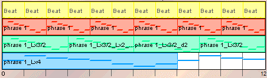

| By design, this composition is fractal with respect to duration. |
| Here is a table of the duration values. Remember that we started with a phrase
consisting of eight quarter notes and repeated this phrase a total of six times. |
| Duration | Count |
| Quater note | 48 |
| Dotted quarter note | 32 |
| Whole note | 12 |
|
| The smallest duration increment in our table is an eighth note (the difference between
a quarter note and a dotted quarter note). If we wish to measure duration in whole units,
we can multiply these values by eight: |
| Duration | Count |
| 2 | 48 |
| 3 | 32 |
| 8 | 12 |
|
| Here is a log-log plot of this data. It demonstrates exactly what we would expect: a
power law relation between the duration of notes and the number of notes of each duration. |
|
|  |